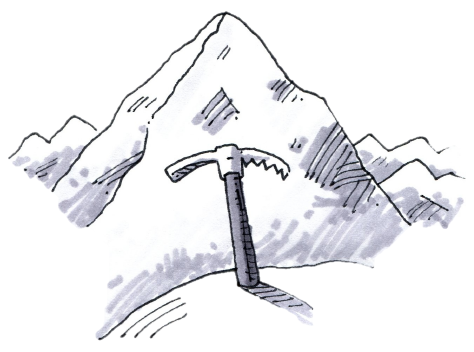
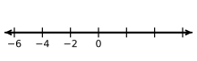
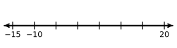
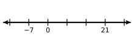
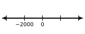

How big is a million?
Investigating a Proportional Relationship
Can you imagine a tower built out of one million pennies? How tall would it be? In this lesson, you will work with your team to predict just how tall such a tower would be. To make sense of this question, you will measure some pennies and investigate the relationship between the height of a tower of pennies and the number of pennies in that tower. This is an example of a special relationship called a proportional relationship, which you will learn more about later in this course.
How tall would a tower of a million pennies be? Would it be taller than your school building? Would it be taller than Mount Everest? (Mount Everest is approximately meters or feet high.)
Discuss these questions with your team and make a prediction. Record your prediction on the table provided by your teacher.
When you are working with your team to answer the “Penny Tower” questions, as well as other problems in this course, it is important to work effectively with other people. Effective math conversations are a valuable part of the learning process throughout this course. Choose a member of your team to read the “Collaborative Learning Expectations” below out loud.
COLLABORATIVE LEARNING EXPECTATIONS
Working with other students allows you to:
Develop new ways of thinking about mathematics,
Learn to communicate about math, and
Understand ideas better by having to explain your thinking to others.
The following expectations will help you get the most out of working together.
T Together, work to answer questions.
E Explain and give reasons.
A Ask questions and share ideas.
M Members of your team are your first resource.
S Smarter together than apart.
TINY TOWERS
To begin to investigate this question, start by collecting data. Parts (a) and (b) will lead you through the data-collection process.
How many pennies does it take to build a tower that is one centimeter tall? Use the tools provided by your teacher to answer this question.
On your own paper, create a table like the one at right. Work with your team to complete the missing information. Be prepared to explain your reasoning to the class.
Height of Tower | # of Pennies | ||
|---|---|---|---|
| |||
THE HUNDRED-PENNY TOWER
“I have an idea!”Carol said. “If I know how tall a tower of one hundred pennies would be, maybe that can help me figure out how tall a tower of one million pennies would be.”
Discuss this idea with your team. How could Carol’s idea work?
Work with your team to figure out how tall a tower of one hundred pennies would be. Can you find more than one way to figure this out? Be sure that each member of your team is prepared to explain your team’s reasoning to the class.
Height of Tower (cm) | # of Pennies | ||
|---|---|---|---|
|
| ||
THE MILLION-PENNY TOWER
Now it is time to answer the big question: How tall would a tower of one million pennies be?
Your Task: Work with your team to calculate the height of a tower of one million pennies as accurately as you can. Can you find the height more than one way? Be prepared to explain your ideas to the class.
Discussion Points
Where would one million pennies belong in our table?
How can the height of the hundred-penny tower help us?
What is the relationship between the number of pennies
and the height of the tower?
Further Guidance
Carol said, “To use my hundred-penny height to find the height of one million pennies, I have to know how many hundreds are in one million.”
How many groups of pennies are in pennies?
How many s are in ? How do you know?
Now work with your team to figure out how many towers of pennies it would take to build a tower of pennies. Be prepared to explain your reasoning to the class.
Use this result along with the height of a hundred-penny tower that you found in part (b) of problem 1-26 to find the height of a tower of one million pennies.
Anouk was working with Carol. “I have another way,” she said. “I can see in the table that the number of pennies is always seven times the number of centimeters. How can we reverse that to find the number of centimeters if we know the number of pennies?”
Discuss Anouk’s question with your team. How can you find the height of the tower if you know the number of pennies in it?
Find the height of a tower of pennies using this method. Does it agree with the result you got in problem 1-28?
Further Guidance section ends here.

How can she change the units so that she can compare them? Discuss this with your team.
Compare your own calculation for the million-penny tower to the height of Mount Everest.
Look at the predictions made by your class at the beginning of this lesson and decide which team came closest to predicting the actual height.
How accurate is your result? Is there any reason to believe that there may be some amount of error in your calculation? How much do you think this error would matter? Be prepared to share your ideas with the class.
Additional Challenge: How many pennies would be in a tower that is miles high?
Additional Challenge: The Taipei-101 is the second-tallest building in the world. There is a staircase up to the floor with an average of steps from one floor to the next.
How many steps would you have to climb to get from the floor to the floor?
When you are standing on the floor, you are feet above the ground. How many stories are below you? About how many feet tall is each story of the building?
About how high is each step?
LEARNING LOGLearning Log
Throughout this course, you will be asked to reflect about your understanding of mathematical concepts in a Learning Log. Your Learning Log will contain explanations and examples to help you remember what you have learned throughout the course. It is important to write each entry of the Learning Log in your own words so that later you can use your Learning Log as a resource to refresh your memory. Your teacher will tell you where to write your Learning Log entries. Remember to label each entry with a title and a date so that it can be referred to later.
For your first entry, consider what you know about proportional relationships. The relationship between the number of pennies in a stack and the height of that stack is an example of a proportional relationship. Talk with your team about how you can describe this relationship.
Then record your ideas in your Learning Log, using numbers, words, and tables to help show your thinking. Title this entry “Beginning to Think About Proportional Relationships” and label it with today’s date.
Methods & Meanings
Median
The mean is a useful way to find the center when data values are close together or are evenly spaced. Another tool, the median, also locates the approximate “center” of a set of data in a different way.
The median is the middle number in a set of data arranged numerically. If there is an even number of values, the median is the mean of the two middle numbers. The median is more accurate than the mean as a way to find the center when there are outliers in the data set.
Suppose the following data set represents the number of home runs hit by the best seven players on a Major League Baseball team:
, , , , , , and .
In this example, the median is . This is because when the data are arranged in order (, , , , , , ) the middle number is .
Mean and median are called measures of central tendency because they each describe the “center” of a set of data, but in different ways.
Review & Preview
Read the Math Notes box for this lesson and review the information about how to find the median of a data set. Then find the median for Andy’s test scores: , , , , , , and .
Use the fact that there are inches in a foot to answer the questions below.
How many inches tall is a -foot basketball player?
If a yard is feet long, how many inches are in a yard?
As you can tell from the examples of the number lines below, not all number lines change by one unit from mark to mark. Copy these number lines onto your paper and fill in the missing numbers.




At the farmers’ market, two pounds of peaches cost . How much will five pounds cost? Show all of your work or explain your reasoning.
Janice’s mother gave her a ten dollar bill to buy five pounds each of bananas and apples at the grocery store. When she got there, she found that bananas were per pound and apples were per pound.
Did Janice’s mother give her enough money? If so, should she receive any change? If not, how much more money does she need? Show all of your work.